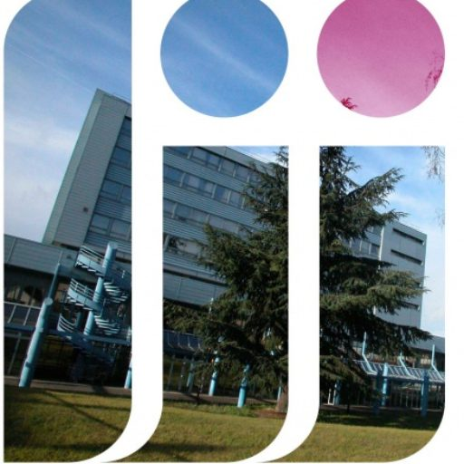
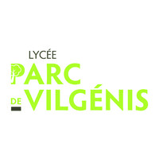
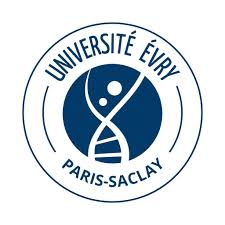
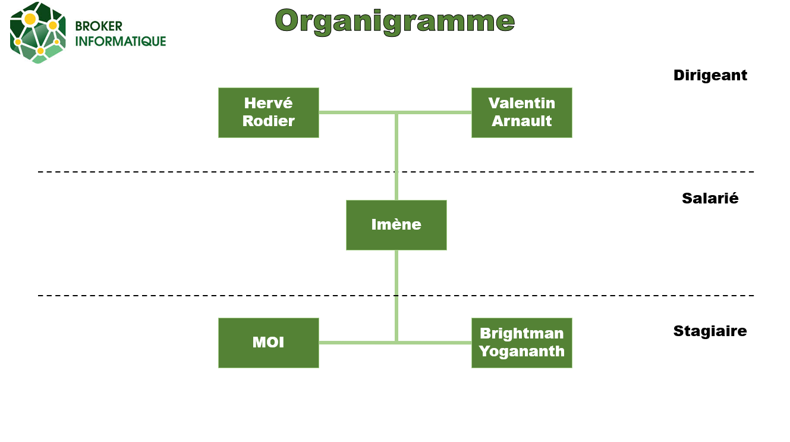
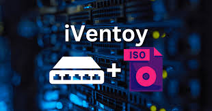
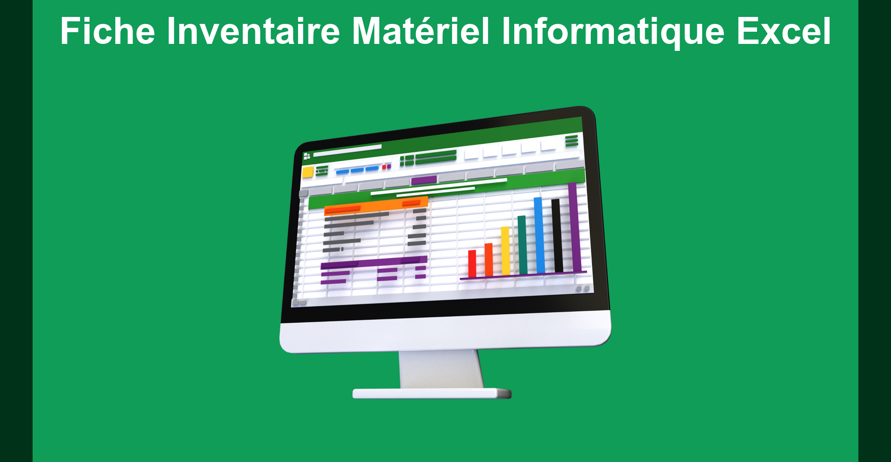
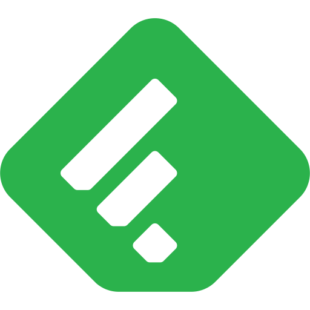

ANAS SELLAM
ÉTUDIANT · BTS SIO SISR
ARGENTEUIL, FRANCE
Bienvenue sur mon portfolio en ligne !
Je suis étudiant en BTS SIO option SISR (Solutions d'Infrastructure, Systèmes et Réseaux) au Lycée Parc de Vilgénis à Massy. Passionné par l'informatique et les nouvelles technologies, je me spécialise dans l'administration des systèmes et des réseaux.
Mon parcours m'a permis de développer des compétences solides en infrastructure IT, cybersécurité et gestion de réseaux. Je suis constamment à la recherche de nouveaux défis techniques et d'opportunités pour approfondir mes connaissances dans le domaine des systèmes et réseaux.
Ce portfolio présente mon parcours académique, mes compétences techniques, ainsi que les projets et expériences professionnelles que j'ai pu réaliser durant ma formation.
Mon parcours Scolaire

Lycée Jean Jaures - Argenteuil
2020 – 2023
Baccalauréat STI2D – option SIN

Lycée Parc de Vilgénis - Massy
2024 – 2026
BTS SIO – option SISR

Université d'Évry Paris-Saclay - Évry
Objectif
LP MRIT parcours CybersécUrité et Devops
Pourquoi le BTS SIO SISR
J'aimais faire de la programmation en STI2D sur les cartes Arduino pour faire des robots.
Mais lors des cours en BTS SIO j'ai apprécié créer des réseaux sur Cisco Packet Tracer.
Expérience professionnelle - Stage
Broker Informatiques
Secteur : Rachat, reprise, revalorisation et recyclage de parc informatique.
Localisation : Ennery, France
Broker Informatique est une entreprise de 3 employés spécialisée dans le rachat, la reprise et la valorisation de matériel informatique d’entreprise. Elle accompagne les organisations dans la gestion de leurs équipements IT en fin de vie, en proposant des services d’estimation, de collecte, d’effacement sécurisé des données et de reconditionnement ou recyclage. Son activité s’inscrit dans une démarche d’économie circulaire, alliant performance économique, sécurité des données et responsabilité environnementale.
Domaines d'activité
Information

Premier Stage
Missions principales
Durant mon stage, réalisé chez un reconditionneur de matériel informatique, j’ai découvert le travail quotidien autour de la maintenance et de la remise en état d’équipements informatiques. Cette expérience m’a permis de mieux comprendre le fonctionnement du matériel et de développer mes compétences techniques sur du matériel physique dans un cadre professionnel.
- Mission 1 : Création de clé bootable window 11 avec rufus.
- Mission 2 : Installation de Windows 11 sur des ordinateurs.
- Mission 3 : Récupération/Ajout de RAM et du stockage sur des ordinateurs.
- Mission 4 : Utilisation de HWiNFO pour l’identification et l’analyse des composants matériels des ordinateurs portable.
- Mission 5 : Réalisation de test et de nomenclature de materiel informatique
🛠️ Technologies et outils utilisés
Rufus, HWiNFO, Windows 11, ordinateurs, tournevis
📈 Compétences développées
Au cours de mon stage, j’ai renforcé mes compétences en maintenance matérielle et en préparation de matériel informatique reconditionné, tout en développant mon autonomie et ma rigueur professionnelle. Ce stage m’a également permis d’échanger avec les dirigeants et de mieux comprendre les réalités de l’entrepreneuriat, notamment les difficultés liées à la création et à la gestion d’une entreprise.
Deuxième Stage
Missions principales
Lors de mon second stage dans la même entreprise, mes missions ont évolué vers des tâches plus techniques et structurantes. J’ai participé à l’analyse d’un environnement informatique, à la mise en place de solutions de déploiement et d’administration système, ainsi qu’à des travaux réalisés en environnement virtualisé. Cette expérience m’a permis de renforcer mes compétences en systèmes et réseaux et de gagner en autonomie.
- Mission 1 : Audit/Inventaire d'un parc informatique pour faire une valorisation.
- Mission 2 : Mise en place d'un service de deploiement PXE avec Iventoy.
- Mission 3 : Création d'un questionnaire sur le site de l'entreprise.
- Mission 4 : Recensement des équipements obsolètes.
- Mission 5 : Suppresion de donnée d'un serveur.
Technologies et outils utilisés
Excel, Word, Windows 11, Windows serveur 2025, Oracle VirtualBox, Tally, Iventoy
Compétences développées
Ce stage m’a permis de renforcer mes compétences en systèmes et réseaux, notamment en analyse d’un environnement informatique, en déploiement de postes et en administration système dans un contexte virtualisé. J’ai également développé des compétences professionnelles telles que l’autonomie, la rigueur et la compréhension des exigences du monde professionnel.
Mes projets

Mise en place d'un service PXE
Projet : ProfessionnelMise en place et configuration d’un service PXE avec Iventoy et l'ajout d'images Windows et Linux.
Projet StationF
Projet : APCreation d'une infrastrcuture système et réseau pour pour stationF. PCA/PRA et supervision de cette même infrastructure.

Inventaire/Audit d'un parc informatique
Projet : ProfessionnelRéalisation de tableau Excel pour l’inventaire/audit des parc informatique arrivant avec le test des equipements.
Compétences
Administration Réseau
Sécurité
Administration Systèmes
Veille technologique : L'après VMware et l'essor des alternatives
Mutation du marché de la virtualisation : De VMware vers l'Open Source et l'Hyperconvergence
Ma veille porte sur les bouleversements du marché de la virtualisation suite au rachat de VMware par Broadcom, et la migration des infrastructures vers des solutions alternatives.
Pourquoi ce sujet ?
- Savoir faire le choix de la technologie
- Lien avec mes objectifs professionnels
- Connaitre plusieurs solutions alternatives
Outils de veille

Feedly Youtube
Youtube Reddit (r/sysadmin)
Reddit (r/sysadmin)Événements
Sortie de Proxmox VE 9.1 : L'alternative crédible
Publication d'une version majeure améliorant l'assistant de migration depuis VMware (ESXi). Proxmox s'impose désormais comme la solution de référence pour les PME souhaitant sortir du modèle de souscription coûteux.
Le "Choc des licences" Broadcom
Confirmation de hausses tarifaires importantes (jusqu'à x4) pour les entreprises arrivant au terme de leurs contrats perpétuels.
Standardisation du format OVF/OVA
L'industrie de l'infrastructure tend vers une meilleure interopérabilité. Ma veille a identifié l'importance croissante des outils de conversion V2V (Virtual to Virtual) pour garantir la portabilité des serveurs entre différents hyperviseurs.
Diversification des Hyperviseurs (Cisco)
C'est la surprise de ce début d'année : Cisco, partenaire historique de VMware, a officiellement lancé son propre hyperviseur pour ne plus dépendre de Broadcom. L'info : Cisco propose désormais une alternative intégrée à ses serveurs UCS.
Nouvelle politique de "Minimum Cores"
Une news technique et budgétaire capitale : Broadcom a généralisé une règle de minimum de 72 cœurs par licence pour certains bundles (comme VCF). L'info : Même si ton serveur physique n'a que 16 cœurs, tu es facturé pour 72.
Sources principales
- Proxmox VE Blog
- Broadcom Newsroom
- lemondeinformatique
- Microsoft
- Podcast : Tech & Co
📬 Contact
Me contacter
Vous pouvez me contacter pour toute question, opportunité de stage, alternance ou collaboration professionnelle.
- Nom : Anas SELLAM
- Formation : BTS SIO SISR
- Localisation : Massy, France
- Email : anas.sellam@email.com
- LinkedIn : linkedin.com/in/anas-sellam